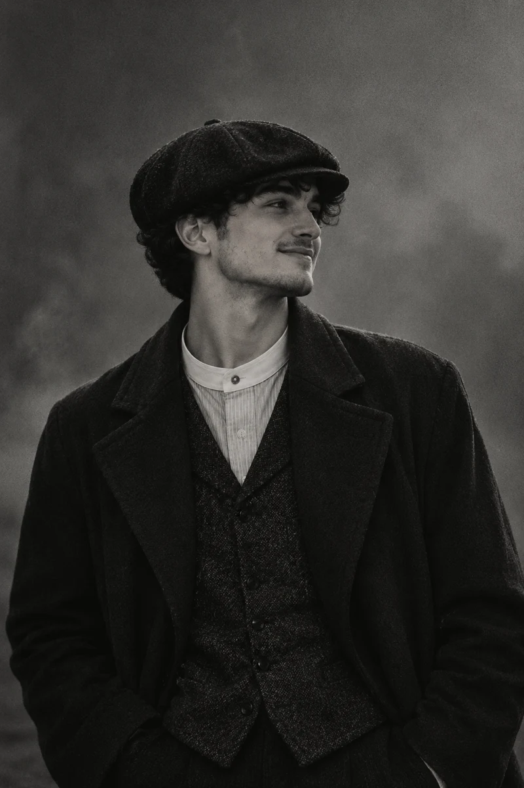
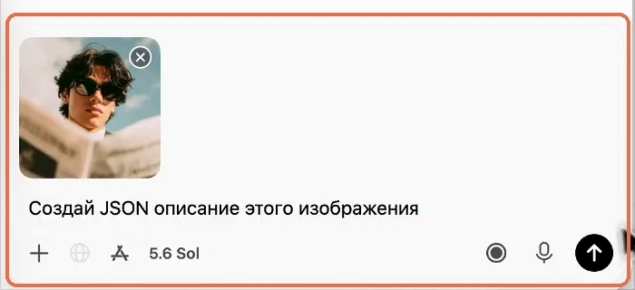
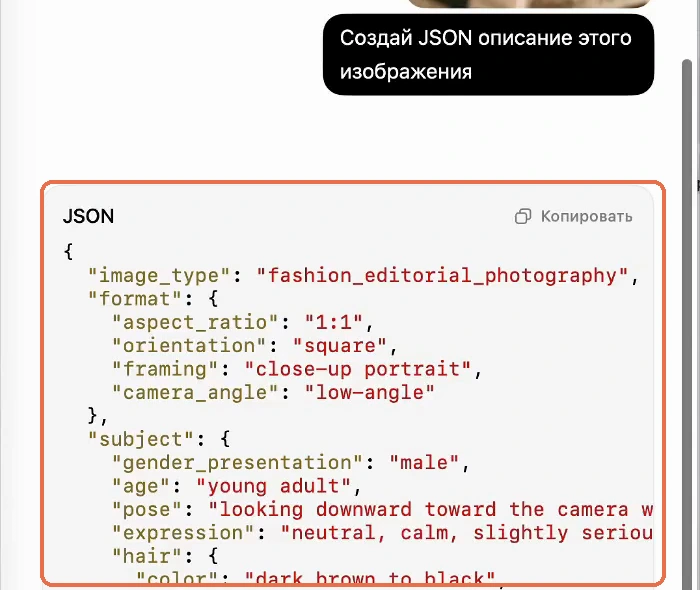
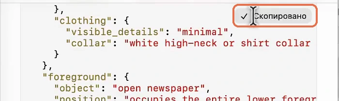
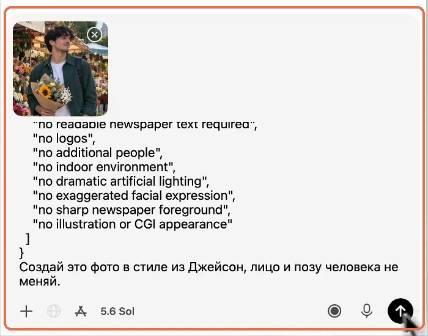
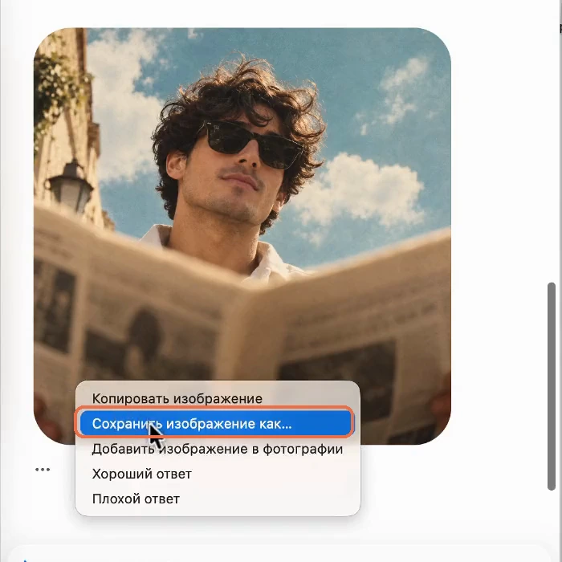
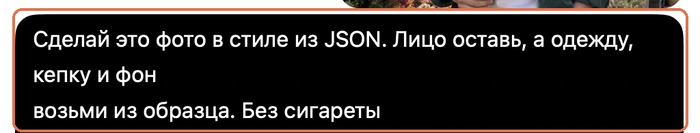

ФОТО / стиль любого снимка
Как скопировать стиль любого фото в ChatGPT: один промпт и JSON
Начальный уровень
Есть обычное фото: ты у окна, с друзьями, на прогулке. А хочется чего-то творческого: кадр как из журнала, из кино или из студии со светом. Раньше за этим шли к фотографу и дизайнеру. Сейчас нейросети исполняют такие желания как золотая рыбка, за пару минут
Нужно всего две вещи: найти образ, который нравится, и сделать три шага в ChatGPT. Все фразы ниже готовые, их можно просто скопировать
К первому шагу ↓Содержание статьи
Скопировать стиль фото в ChatGPT: что получитсяЧто понадобитсяЧто такое JSON простыми словамиШаг 1. Получи рецепт образцаШаг 2. Скопируй JSONШаг 3. Перенеси стиль на своё фотоКак поменять ещё и одежду с фономОдна фраза на все случаиЕсли что-то не получаетсяСтало понятнее?Скопировать стиль фото в ChatGPT: что получится
Одно и то же фото и четыре разных образца: летний журнальный кадр, вечер в кафе, красный студийный свет и Томас Шелби из «Острых козырьков»

Что понадобится
- ChatGPT: открывается на chatgpt.com, подойдёт аккаунт, в котором можно прикреплять фото и создавать картинки
- Фото-образец: любой снимок, стиль которого нравится. Подойдёт кадр из Pinterest, журнала или фильма
- Своё фото, на котором хорошо видно человека
Что такое JSON простыми словами
Шаг 1. Получи рецепт образца
- Открой ChatGPT и начни новый чат
- Прикрепи фото-образец: нажми «+» слева внизу поля ввода или перетащи файл в окно чата
- Вставь фразу и отправь:
Создай JSON описание этого изображения

Образец прикреплён, фраза в поле ввода
Результат: в ответе появился блок с подписью JSON и длинным текстом в фигурных скобках

Шаг 2. Скопируй JSON
- Нажми «Копировать» в правом верхнем углу блока JSON

Кнопка сменилась на «Скопировано»
Результат: кнопка на секунду сменилась на «Скопировано», рецепт лежит в буфере обмена
Шаг 3. Перенеси стиль на своё фото
- Открой новый чат, чтобы в нём были только твоё фото и рецепт
- Прикрепи своё фото
- Вставь JSON в поле ввода: Cmd+V на Mac, Ctrl+V на Windows
- Под JSON допиши фразу и отправь:
Сделай это фото в стиле из JSON. Лицо и позу человека не меняй

Своё фото, JSON и фраза в поле ввода. На скрине фраза набрана голосом, поэтому слова чуть другие
Картинка создаётся не сразу: пока ChatGPT работает, в чате видно «Делаем набросок» и «Настраиваем сцену»
Результат: в чате появилась картинка с тем же человеком, а свет, цвета, поза и настроение как на образце. Чтобы сохранить её на компьютер, нажми на картинку правой кнопкой и выбери «Сохранить изображение как…»

На скринах ChatGPT на Mac. На Windows и в браузере шаги те же
Как поменять ещё и одежду с фоном
Первая фраза бережёт позу и лицо, поэтому иногда фото просто перекрашивается. Если хочется настоящего перевоплощения, в шаге 3 вместо неё напиши:
Сделай это фото в стиле из JSON. Лицо оставь, а одежду и фон возьми из образца
Если на образце есть то, что тебе в кадре не нужно, например сигарета, допиши в конце «без сигареты»

Результат: лицо осталось твоим, а одежда, фон и настроение взяты из образца целиком
Одна фраза на все случаи
Главное в фразе - начало: «Сделай это фото в стиле из JSON». Его оставляй всегда. А вот продолжением можно играть: допиши, что сохранить с твоего фото. Скопируй фразу и вместо скобок напиши своё
Сделай это фото в стиле из JSON. (Что сохранить с моего фото)
- «Сохрани лицо и позу» - поза и всё, что в руках, останутся, а свет, цвета и настроение будут как на образце. Так получился кадр в красном свете с тем же букетом
- «Сохрани только лицо» - сцену и позу ChatGPT возьмёт из образца. Так получился кадр в кафе: букета там уже нет, парень сидит за столиком
- «Сохрани лицо, а одежду и фон возьми из образца» - полное перевоплощение, как с Томасом Шелби
Результат: одна фраза, а меняется ровно столько, сколько разрешено
Многие делают проще: прикрепляют два фото и пишут «сделай моё так же, как на первом». Это не то же самое. Так ChatGPT подхватывает стиль на глаз, а JSON раскладывает образец по полочкам: свет, цвета, ракурс, фон, настроение. Поэтому атмосфера переносится намного точнее
Стиль скопирован. А если фото нужно десять в неделю?
Что можно делать с нейросетями, если не знаешь кода?
Чтобы почувствовать размах, посмотри Концентрат Ивана Сергеева. ИИ-агенты на твоих глазах собирают продукт, контент, сайты и воронки без кода. Это основа под любую цель: свои услуги, партнёрка, чужой бизнес. Три дня бесплатно, VIP с четвёртым днём - 990 ₽
Забрать КонцентратУже знаешь, чего хочешь? Тогда в мастер-группу Ивана: система продаж на ИИ без продюсера и технаря, сопровождение и сообщество
Заполнить анкету предзаписиНабор открывается редко, кто записался заранее, получает лучшую цену и бонусы. Платить сейчас не нужно
Реклама. ИП Сергеев И. С., ИНН 352511695540. erid: 2Vtzqvk2p6q